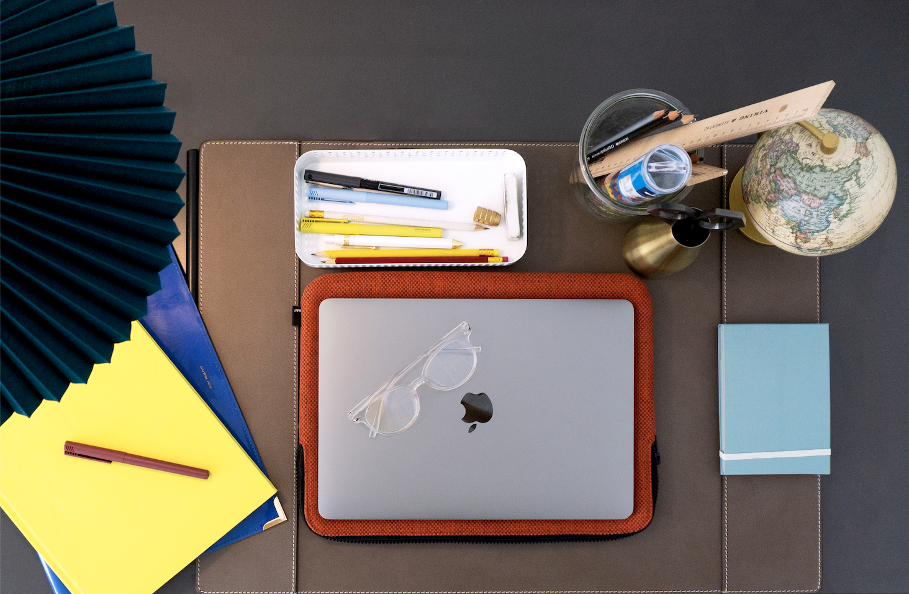

Mig
Velkommen! Til mit portfolio. Mit navn er Caroline Schultz Fabricius. Jeg er en 21-årig CphBusiness multimediedesign studerende, som dimitterer i året 2022. Jeg har flair for visuelle og æstetiske udtryk, samt stor interesse for e-commerce og reklame. I mine værker indgår studieprojekter såvel som personlige projekter - påbegyndt og udført med en drivkraft i form af fornøjelse, nysgerrighed og lyst til udfordring. Min digitale designudvikling fremtræder fra højre til venstre og jo længere ned man “scroller “ i mine VÆRKER. Denne udvikling spænder over min to-årige erhvervsakademiske uddannelse og eventuel top-up (professionsbachelor). Jeg bor på Østerbro, og i min fritid er jeg fysisk aktiv i form af løb og nyder kunst i dens mange former, herunder musik, film, koncerter og teater. Jeg benytter mig meget af selvstudier - af ren og skær interesse og lyst til en konstant og positiv udvikling af mine evner.
